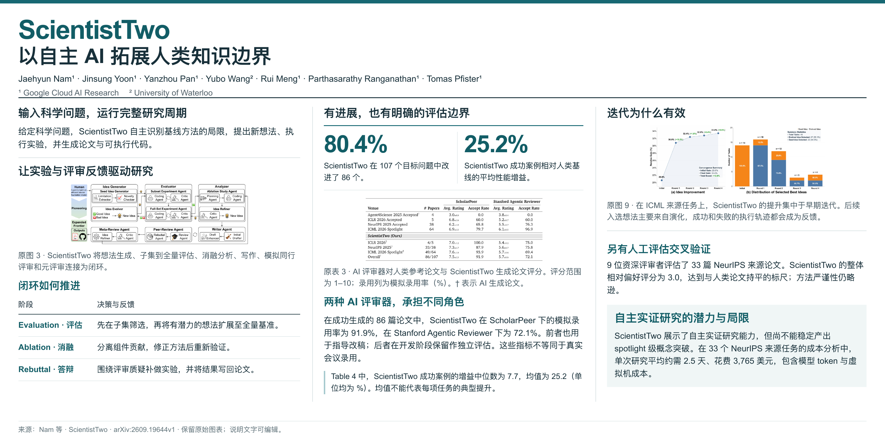

研究与实践随记
Blog.
科研笔记与论文阅读。记录问题、方法，以及支撑结论的证据。
王邻皓 / Linhao Wang
置顶 · 论文与海报ScientistTwo：从研究想法到实验反馈
按研究流程读懂自主科研：怎样筛选想法、解释提升，再把评审反馈变成下一步实验。配合原论文方法图与核心实验。
阅读文章与海报 ↗ 
文章归档
13 篇笔记与阅读论文阅读约 10 分钟
数字来自哪次实验，方法是否对应代码，引用是否真实？沿文献、实验与写作流程，理解证据链和四项产物审计。
AI for Science科研智能体论文阅读

论文阅读约 9 分钟
从研究场景、题目测评到多轮项目，理解科学发现能力该怎样评价，以及答题分数何时无法预测研究表现。
AI for Science科研能力评测论文阅读

论文阅读约 9 分钟
按研究流程读懂自主科研：怎样筛选想法、解释提升，再把评审反馈变成下一步实验。配合原论文方法图与核心实验。
AI for Science科研智能体论文阅读
科研笔记约 15 分钟
把病灶是否存在、模型如何回答，以及 Probe 读出了什么分开理解，建立医学 VLM 可解释性研究的入门框架。
医学 AI可解释性Probe
论文阅读约 10 分钟
从系统架构、实验与失败案例出发，区分带引用的解释、诊断准确性与真正的临床效用。
医学 AI科研智能体证据

科研笔记约 8 分钟
从可执行任务包到独立验证、局部修复与干净重放，理解 G–V–R 为什么不只是一次自我反思。
Coding Agent验证器数据工程
科研笔记约 14 分钟
梳理需求溯源、原子准则、hard gates、过程评价与对抗审计，区分评分一致性和规则本身的有效性。
评价与奖励Coding AgentRubric
科研笔记约 6 分钟
同一份文档或工具记录，怎样逐步增加任务、状态与验证结构，转化为 SFT 和 RL 可用的数据。
数据工程Agent 训练强化学习
科研笔记约 12 分钟
从 Plan-and-Write 到长篇记忆与读者选择，整理生成路线、评价维度和优先阅读清单。
长篇生成文献地图交互式叙事
论文阅读约 1 分钟
不更新模型权重的语言反思，如何影响下一轮行动，以及错误记忆为什么需要被检查。
自我修正科研智能体论文阅读
论文阅读约 1 分钟
将初答、外部工具核验与修订连接起来，理解 self-critique 和 tool-grounded critique 的区别。
自我修正科研智能体论文阅读
论文阅读约 1 分钟
同一个模型扮演生成、反馈与修订角色，是一个简单而重要的推理时优化基线。
自我修正科研智能体论文阅读
论文阅读约 1 分钟
将长时程复现拆为可评分的层级子任务，理解 rubric、产物证据与自动 judge 的关系。
科研智能体评价与奖励Rubric
没有找到相关文章
试试其他关键词，或查看全部文章。